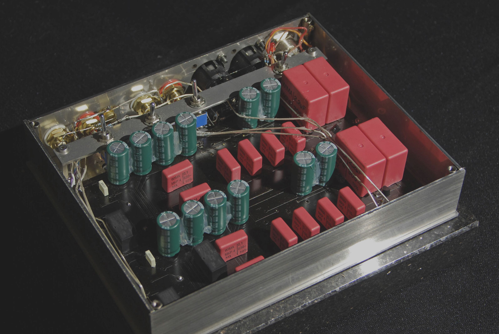
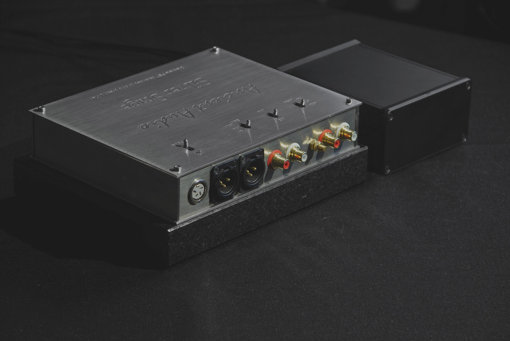

Silver Stage
However, black vinyl records are more „ancient”, than silver discs. Rebirth of black records pushed Ancient Audio to use own broad experience in amplifiers design, to make hi-end dedicated MM / MC phono preampliifer. The device was designed as small box, to „Set and forget” . The reason is simple. electric signals from MC cartridge are extremally small. Electronics, cables, power supply can take electric and magnetic noise. To reduce noice ( usually mains network hum) needs careful placement cables and electronics. So, phono premaplifier should be as small as possible, to easy place in the most comfortable place, far from power transformers of for example power amplifier. But, this place can be far from favourite equipment table. Small, low power , closed device implified to use transistors, instead of tubes ( Ancient Audio speciality) . Tubes are queens of amplification of CD basing systems. Delicate softness of tubes makes less irritating sharp sound of CD. However, vinyl records are more lazy. They needs vitality of transistors. Second reason to use transistors is need to low noise level. Noises of tubes are higher, because they are working in higher temperatures. It is very hard to make tube MC preamplifier without step-up input transformer – an additial source of distorstions. Demands of MC amplifer are very high, gain must be over 10 000 , but with low noise, low distortions. So, Silver Stage uses five stages of amplifiecation, working only with local feedback. Due to very high gain, it was necessarry to make fully balanced circuit. Topology is similar to the most demanding amplifiers in electronics: vertical amplifiers for oscilloscopes. They must give high gain, from DC to hundred of MHz. And with minimal distortions, noise, temperature immunity. Fully balanced topology made XLR balanced outputs natural, not just by inverting phase of RCA inputs, as most of preamplifiers. To linear work, FET transistors were applied. They have lot of advantages, however one problem. Their parameters are vary piece from piece , by 100 , sometimes 200 %. So, each and every of 26 transistors was needed to be carefully selected, in few temperatures. It makes manufacture of this preamplifier very complex, labour consuming. RIAA network, mutistage RC type needs also fine selection of components, to keep left to right chanel perfect balance in whole audio spectrum.
All switches are hermetically sealed miniature relays, with very low ON impedance. It is important, because impedance of MC cartridges is just few ohms, like speakers. All internal wiring is made of pure silver, like other hi-end Ancient Audio products. To keep power transformer as far as possible, power supply is separasted. Cabinet is made from non magnetic componets. There are two versions: silver, stainless steel ; or golden /black bade of brass and aluminium
To make cable placement easier, the heavy granite base can be optionally